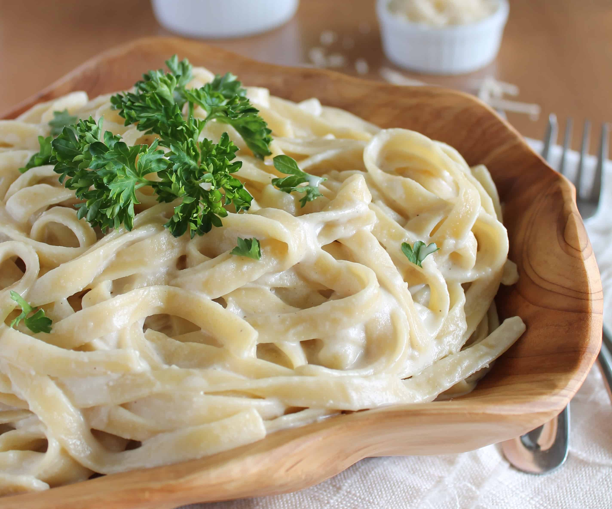

Fettuccine Alfredo Recipe

Description
Fettuccine Alfredo is a simple and delicious dish that uses fettuccine pasta noodles mixed with creamy alfredo sauce.
You can also add meat, like chicken, to the dish.
Ingredients
Note: this recipe yields 6 servings; Adjust accordingly.
- 24 ounces dry fettuccine pasta
- 1 cup butter
- 3/4 pint heavy cream
- Salt and pepper to taste
- 1 dash garlic salt
- 3/4 cup grated romano cheese
- 1/2 cup grated parmesan cheese
Steps
- Bring a large pot of lightly salted water to a boil.
- Add fettuccine and cook for 8 to 10 minutes or until al dente; drain.
- In a large saucepan, melt butter into cream over low heat.
- Add salt, pepper and garlic salt.
- Stir in cheese over medium heat until melted; this will thicken the sauce.
- Add pasta to sauce. Use enough of the pasta so that all of the sauce is used and the pasta is thoroughly coated. Serve immediately.
Back to top
Back to home